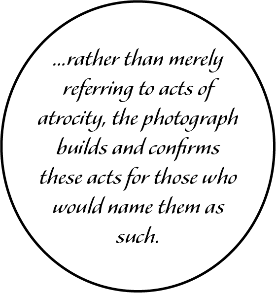

Drawing is one of the simplest and most efficient means of communicating visual ideas. Almost every visual piece of art starts with a sketch on paper and from there on out developed further. Almost every retrospective exhibition dedicated to an artist starts with them learning the fundamentals, academic drawings of still life compositions and such. Aren’t we all glad Mark Rothko moved on from that onto something greater? Drawing has always been seen as a preparatory form of art you are supposed to grow out of. In 1746 French philosopher Charles Batteux was one of the first people to attempt to define fine arts, however, his definition did not include drawing precisely because of the aforementioned reason. This kind of stigma against drawing has extended well until our day centuries later. It is a cheap and fast means of creating, better suited for children, with whom investing into expensive means of creation is not practical. Unfortunately, most forms of art which derive from drawing, such as animation or comics, receive a similar kind of treatment. Not a lot of artists at a later age pick up comics as a means to express themselves, and whoever does is usually seen as a craftsperson instead, a person who is trained to make comics and nothing else. In fact, any hardly visual or writing field considers a comic as a format suitable for their content. And that is not because comics are incapable of it. I would argue it is, because we see comics as an easily reproduced drawing, as disposable entertainment.
Untitled by Mark Rothko, 1944–1946
Untitled by Mark Rothko, 1944-1945
This thesis is written along the lines of, by using, etc references from the realm of popular culture, artistic references etc. and rely further on examples of producers of comics and creative writers. The structure the thesis is based upon can be compared with a network that is interconnected but allows for jumps. As in a network fragments are connected although connections might be obscure. Hence, if you pull one part of a mobile the rest will follow, it might transform but the nodes remain connected at all times.
Panels from Drawn to Berlin: Comic Workshops in Refugee Shelters and Other Stories from a New Europe by Ali Fitzgerald, 2018
My fascination in comics started when I was a little kid, but exactly as Charles Batteux wished, I set it aside as something not acceptable for my age to be interested in as I grew older. However, a little more than a year ago my interest in comics came back stronger than ever. Now as an artist and graphic designer I saw them as something a lot more complex and capable than just a piece of entertainment. Comics are pretty unique in terms of its medium. It is where visuals and text and/or narrative meet right at the middle, a diverse form of art which has collected bits and pieces from various forms of art, design, and storytelling to introduce a different way of getting a point across, the way it triggers our imagination and allows us to speculate is unlike any other genres of art or writing.
Just at a first glance most people could tell a classic form of comic. Common indicators are drawn panels, frames, speech bubbles, narrative and so on. On the other hand, it is pretty easy to find comics which are undeniably comics yet without some of these features, perhaps neither of them at all. Comics do not need to be drawn, a great example of this are fumetti - comics made out of photographs. Comics can easily have no text but still maintain a narrative. To be fair, not even a narrative is an obligatory part of comics, some comics can be as abstract or vague as modern art. Having said all that it should go without saying that speech bubbles, frames or sequence are definitely not high on the necessity list either. Comics are a lot more flexible than most think and, in my point of view, the boundaries to where they can be pushed are not even in the horizon.
Panels from Maus by Art Spiegelman, 1980–1991
Comic books and animation are for children. The moment there is a comic book or an animated show for adults it is extremely vulgar and ugly on purpose to draw the line and alienate itself from young audiences. Even the word comics implies that the subject matter will be funny. On the other hand, there is a great deal of comics which are very serious and mature yet not vulgar. One such example is Maus by Art Spiegelman, which tells the story of the author’s father and his struggle as a Polish Jew in World War II. It’s critically acclaimed and one of the first times a comic book winning awards meant for non-pictorial literature. For once a comic book stands on the same ground as the rest of the books in a bookstore. However, is it really a comic book?
Starting from around the 70s first comic books preferring to be called graphic novels instead appeared. Maus is more often named as such as well. One of the first people to use the term was comic book reviewer Richard Kyle who did so to separate some comics from the rest because they were more “serious”. At least he is brutally honest. But that is when the fear of the comic label might have begun. Most comic books which might hold more merit than just entertainment are labeled as graphic novels nowadays. Same counts for Japan, although they use the term light novels instead. Essentially all graphic novels are comic books but not all comic books are graphic novels, those are the superior kind and avoid to be called a comic book as not to devalue themselves. Nonetheless, more and more comic books are striving to be called a graphic novel so potential readers and critics would take them more seriously. Even superhero comics, like some Batman comics, acquired the graphic novel label.
Others explain that a graphic novel is different than any comic book because it is not a serialized comic but a stand-alone comic instead. But even Maus, the very cream of the crop graphic novel, was originally a serialized comic, its publishing spanned for over a decade, not to mention that it was serialized in Raw (1980–1991), an experimental comics anthology and the highlight of the alternative comics movement in the 80s. If a label such as graphic novel is necessary - so be it, however, as record shows, most reasoning for such a label is running away from the word comic. On this topic Katherine Roeder concludes:
Instead of trying to show that comics are a capable and diverse medium, an entirely new label is created in order to hide and run away from its origins, from what it is.
Consecutive images to tell a narrative have been used in art for as long as visual art has been around. They were drawn in caves before our era, many argue if the Bayeux Tapestry from the 11th century is an early form of a comic as it included both images and corresponding text. Some go as far as at the very least Egyptian hieroglyphs. Various medieval paintings picture speech scrolls as a predecessor to contemporary speech bubbles. In general, medieval times have a lot of early comics to show. Egerton MS 1894, also known as the Egerton Genesis Picture Book, illustrates various biblical tales combining text and image, fragmented with approximately four panels on each page. Although that sounds like a comic like no other, it is worthy to note the position of such work in society of this time. Manuscripts were all in the hands of monks. They did both writing, lettering, and drawing, much like a comic artist would. However, the readers were all high-class society as they would be the only ones able to afford and educated enough to read them. Quite a shift from today, when comics are more associated with those who cannot sit down and read a “real book”. It would seem that high-class works reminiscent of comics are not all that unusual until they got defined as such.
Egerton Genesis Picture Book, 14th century
Many historians start counting the dawn of comics with Rodolphe Töpffer’s work. He is sometimes credited as the first comics artist in history and the father of the modern comic strip. He was highly praised for his work and creativity by people such as Johann Wolfgang Goethe. But already in the This unfortunately fosters a high-low dynamic within the field that is already marginalized and fighting for aesthetic approval. 19th century he, even as the father of modern comic strip, was worried that most critics will overlook the benefits and possibilities of his work because it could possibly make information more accessible. To this day it is still relevant.
Plate 13 of the book Histoire de Monsieur Cryptogame by Rodolphe Töpffer, 1830
From Monograph by Chris Ware, 2017
John A. Fisher
Comics as such were a lot more strictly defined in the 20th century, but that put them in a very narrow frame. There has been a historical process whereby public arguments about comics, and what is acceptable under that name, have become in their turn powerful determinants of what is produced. “New media” is often judged by the standards of the old. Back when comics were not defined as such they were made under different circumstances. The comic-like manuscripts of the medieval times, narrative format aside, look no different than any other manuscript of the time. Töpffer’s visual abstraction could even be argued to be ahead of time, which got popularized into the high art mainstream only with the modernists a century later.
But as we step into the 20th century in the United States, into the Golden Age of comics which gave rise to the superhero genre in the west, the art and storytelling were often a few steps behind than what was happening in the high art scene. The Golden Age of comics focused on photorealistic art while we were stepping into the abstraction of modernism. Due to political circumstances and scrutiny against comics for allegedly promoting violence, comics started breaking out of their yet even tighter frame only with the Dark Age of comics in the 80s (nothing to do with downfall or stagnation associated with medieval times but with the content and imagery instead). This medium since the 80s still shares many visual and narrative similarities to a bunch of modern high art movements or artworks but making such connections is a lot more controversial. Scott McCloud points to dada visual poems which play with type as object as much as a literary tool, using composition to enhance or put a new layer on language5. That sounds oddly familiar. His most elaborate comparison is with expressionism and visuals comics use. Narrative and visuals in comics go hand-in-hand and combine so organically that readers often do not notice just how elaborately this combination is made. In simplicity or detail, in thick or thin, every line in a comic expresses something and contributes to the narrative as so:

It is hard to talk about comics in a high art space without bringing up Roy Lichtenstein. “Oh, this reminds me of Lichtenstein”, “It’s like that guy who paints big comics”. Honestly, it has become irrelevant just how much the work resembles what Lichtenstein does, as long as it is a comic the comparison is inevitable. Although he was one the first to make people consider comics as a form of art outside of just entertainment or mass art, his example is not exactly the healthiest to follow. As it has been followed a little bit too much for way too long. To the point of Lichtenstein’s work, which slowly and thoroughly reproduced mass printed medium by hand and on a large scale, is now turned around back to mass production. Of course, the most controversial part of his work is appropriation. Comic artists in the 60s largely lived on the poverty line, poor working conditions, and were usually not credited in their work6. In addition, comics in general were not in a great position as they were under the microscope by the US senate lead by senator Kefauver due to alleged links between comics and juvenile violence. All in all, comics were not in a good position at the time and pretty easy to take advantage of. He never paid a dime of royalties to the original artists without whom his most famous work would not be or even asked for permission to use it. Lichtenstein was fascinated by comics and their ability to convey complex narratives but worked in a fashion no better than of those who did not hide their condescending attitude towards the comic industry.
Most of the discourse about Lichtenstein’s controversial way of working emerged after his death. His retrospective exhibitions do not seem address this issue either. One of the most famous exhibitions took place in Tate Modern in 2013 included only one example of panels Lichtenstein copied alongside his artwork WHAAM!. Some artists took the issue into their own hands. A few years later an artwork by Dave Gibbons titled WHAAT? turned Lichtenstein’s work ethic on him, critiquing his work, using Lichtenstein’s classic Benday dots as dollar signs, crediting the original panel artist directly on the canvas and giving profits of the sold painting to The Hero Initiative, a foundation supporting struggling comic artists. Ironically Lichtenstein’s archive website now includes all the credits to the panels and artists he referenced, adds warnings not to use his or third-party artworks without permission due to copyright laws. (This kind of absurdity is on a similar level of Supreme, an expensive street clothing brand from the US, which appropriates Barbara Kruger’s artwork for their identity, admits it, yet sues those who do the same to them.)

Whaam! by Roy Lichtenstein, 1963
From All American Men of War no. 89 by Irv Novick, Jan-Feb 1962
WHAAT? by Dave Gibbons, 2013
Appropriation aside, Lichtenstein’s comic aesthetic influence in high art is similar that of Rodolphe Töpffer to comics as a medium in general. Audiences took their example in a very straightforward fashion. Maurice Horn argues that Töpffer might have been the first comic artist but with him the medium settled and has not evolved much since 19th century. We got stuck with the conventions Töpffer established. Similarly, Lichtenstein’s work had such a strong identity within the aesthetic of high art at the time (and to this day) that it has not been seriously rivalled since. Either the general attitude towards comics as a medium did not change at all or artists are intimidated to even consider comics as a fit medium to express themselves in fine arts because the shadow Lichtenstein has already cast is way too strong. Or both.
In my opinion, a fitting alternative to Lichtenstein’s way of working would be Keith Haring. Unlike Lichtenstein, who used comics and their aesthetics to the point of fetish, Haring blended comic-like iconography, symbols and general visual vocabulary more organically. He used sequential art as his way of expression only where the content called for it, similarly to the form follows function principle. Haring’s work also shows that a comic and its vocabulary (in a fine arts context) is fit to express and deal with complex issues, such as the AIDS epidemic, which was a relevant topic in the country at the time and to Haring personally as well.
Mass art, which comics are usually accredited to, are criticized for trying to win over large audiences and be relatable to as many people as possible by any means necessary. It is seen as shallow and passive, lacking depth, while highbrow art is praised for the contrary. However, assuming comics are just superhero comics is just as superficial. Comics’ ability to explain or introduce complex concepts and subjects sometimes better than just image or text would separately is something that is often looked down on. For example, Jen Wang’s The Prince And The Dressmaker tells a story about a prince who likes to dress as a girl in secret and his talented dressmaker. Although the book never really says whether or not prince Sebastian was transgender, genderfluid or simply interested in crossdressing, the story does a fine job gently opening up the gender subject to children and teens, potentially helping some find comfort or encourage others to reflect and analyze themselves and their surroundings. It is exactly the comic’s easy format and accessibility which greatly favors the storytelling and its purpose. In an interview with podcast 99% Invisible Scott McCloud talks about his experience being commissioned to make comics for a university-level physics book8. Naturally he notes that it is quite a complex task for him as an artist to visual explain a concept he is not trained for to those who are, however, If something is educational, accessible and well-made is that bad?

From The Prince and the Dressmaker by Jen Wang, 2018
Same accounts for personality and expression. If anything, making a comic lacking both of these traits is relatively hard. As it combines both writing and drawing, the thoughts and emotions of the author are shared in various shapes and forms. A lot of people have taken a liking to this form of self-expression. Comics such as Persepolis by Marjane Satrapi or Kabi Nagata’s My Lesbian Experience With Loneliness talk about personal life experiences and issues not many could really relate to. Not only describing their feelings but drawing them out puts the author at an even more vulnerable position, now there is even less room for misunderstanding. It also addresses the reader in an even more confrontational manner.
The internet pushed this even further. Not many publishers are willing to invest their time and money into something too specific, minorities and their experiences are often omitted from physical publishing to this day. The internet allowed comic creators to share without the limitations set by editors, everyone can now create their own platform regardless of skill or resources. Kate O’Neill’s Princess Princess Ever After about two princesses falling in love was in fact so successful that publishers picked it up to be printed, although it still remains digital and free online. In adition, a school in Australia in 2017 presented the book to a class of students age 12-13 as an example of fragmented storytelling. The school staff was supportive, however, it outraged the parents who accused it as propaganda in the classroom even if the lesbian relationship in the book was not the focus on the class. To react to this this the author stated:
These small comics have also been able to cause big changes in the world. This comic strip was published in a series called Dykes to Watch Out For, one of the earliest representations of lesbian culture in mass media, by Alison Bechdel. It received a lot of attention a few decades after its original publishing and greatly contributed to the gender equality discussion in movies and popular media in general. It states three rules by which the character judges whether it is worth going to a movie and concludes that not a lot of movies can pass these minor guidelines. Movie critics and viewers started analyzing movies based on these specific restrictions, even creating entire databases of movies, evaluating whether or not they pass. Since then people take this comic strip even further, arguing that the standards are still too low, some end up expanding the rule list by adding points like the two female characters talking have to be named. Alternatively, some people think that this rule is not fair to all movies depending how big the cast or what the subject matter is. Either way it is one of the most influential comic strips of all time, having made significant progress on dealing with the gender equality issue in film.
Specificity is especially prominent in Japanese comics, manga. They are usually produced in even lower quality than western comics, small format, only black and white print, cheap paper and paperback covers. Almost every book from the outside looks the same. However, what makes the manga industry shine the most is the overwhelming variety of topics and themes it explores. Just about any sport and hobby has a manga about it, there are specific genres to keep a reader of any gender or age interested.
Comic strip The Rule from Dykes to Watch Out For by Alison Bechdel, 1985
Now that we have established that comics can be a very personal and subjective form of art, unlike mass art critics suggest, let’s look at some areas or fields of study where objectivity is more valued. For example, journalism. Although journalism can be biased and persuasive, we expect it to give us the news, not alternative facts. Journalism’s visual counterpart is photography, a quick and portable medium. Susan Sontag describes photography this way:
In addition, she criticizes photography for lacking narrative, being stuck in the momentary, and when it comes to journalistic photography, only able to shock, or as she puts - haunt, and not explain. Photography in journalism is not objective just as journalistic writing is not. Judith Butler in Frames of War proposes:

a frame within a frame concept where the photographer already manipulates what is visible and what is not in a photograph, omitting details and positioning a point of view. Therefore, if we cannot see photography as evidence anymore is it really necessary to strive for ultimate objectivity in journalism or its visuals?
Considering that a photograph, especially in journalism, may lack the ability to show narrative and stray away from objectivity, a comic has been proven able to substitute a photograph or an entire article. Comics journalism has been starting to gain some attention as a valid alternative to the combination of written word and imagery as a pair in 2010s. This kind of storytelling has been so far the most popular in countries like USA and France, where freedom of speech is seen as one of the core values of the nation. Most notable and successful examples of such journalism come from France at this point in time.
A prominent example is La Revue Dessinée, a French journalistic publication made entirely in a comic format. Issues come in a softcover format of over 200 pages, it contains articles made through collaborative efforts by various duos of journalists and illustrators. The comics themselves vary in both length and subject matter, some are still on the heavy side even in a comic form. But most importantly, there is a sense of freedom in the publication. Some comics serve, similarly to editorial illustrations, as abstract summary of the text. However, now more hand in hand, text completing the drawings and vice versa. There are a lot of comics which take another look at people or events which happened years ago, when there was no urgency or the means to snap photos, when the stories that needed to be told were rendered invisible or remained hidden. In addition, the narrative is easily built from various points of view, not necessarily just from an observer, as journalistic photography usually frames. On the downside, it is not a publication which you would expect to bring readers the breaking news. The investigations are made specifically for the publication, in turn so are the drawings, hence La Revue Dessinée is released only once every three months. One could argue that it is a slower format when it comes to its production process, it slows into being and differentiates itself from faster media alike social media twitter news or maybe even journalistic essays that are vignette texts of only 300 to 500 words and that are written in a linear form.

Perhaps the most prominent and well-known examples of the power of a comic, at least in the world of journalism, is the French satire newspaper Charlie Hebdo and the attacks taken on it over the years. In this context it is not the most important to discuss the ins and outs of the exact issue which resulted in the attacks but to address the format. It is one of the most important cases in the free-speech discourse of the 21st century. It is quick, witty, and unapologetically direct. Therefore, it is easy to consume and share yet still maintain a newspaper format. Using multiple layers of communication, visual and text, it leaves little room for misinterpretation, it is able to not only inform but, as a creator, also firmly show a position.
Having discussed both comics in journalism, biographical and autobiographical comics, my original issue with stigma against comics can be developed further. Even if comics can express serious themes and topics, can we take it seriously enough to use it as a primary source of information? Twitter, a very fragmented and limited writing platform, has developed to be not only a primary source of the news but quite often the news itself. Speed aside, the process of creating a comic requires serious research, planning, editing, it is able to bring never before seen information to an audience. They can be direct, provocative and hit the nail on its head, provoke a discussion. However, I cannot say that I have seen a lot of comics being quoted in any text outside of comics theory itself. At this point text-based twitter is a lot less flexible. It is clear that there are people out there who are willing to bet on a comic as their format of expression but the audience still hesitates.
Will Eisner, American cartoonist and writer, argues that comics can be called reading in a wider sense than that term is commonly applied. Most common interpretation of the word reading is understanding and interpreting speech-based writing systems. However, it should not be forgotten that letters are just as much symbols as, for example, a bathroom sign and requires accumulated knowledge in order to decode it. Furthermore, our cultural archive also has an influence on how many symbols we understand or how the same symbol can be interpreted across cultures. While discussing the stoics, Umberto Eco writes:
A good example of this is the swastika sign and how it is being used in the 2020 Olympic Games in Tokyo. Although in the west it is only representative that of Nazi movements, in Japan it still holds a connection to Buddhism and was supposed to be the sign for temples in maps during the event. However, due to outcry the symbol had to be changed for non-Japanese maps to avoid controversy and confusion. Similar changes had to be made to a couple of more signs so far. In addition, comics actually push its signs even further than text language would, to abstractions which would not necessarily make sense in text form. For example, there are emotion signifiers, such sweat on the body, essentially an indication of pores, to continue with the aforementioned illustration by Eco. As time went on sweat was sometimes pushed next to the body instead, for emphasis. This kind of evolution went so far that even robots end up having sweat to symbolize distress.
This exhibits the evidence that comics have their own vocabulary which requires decoding just like its text counterpart and are not always interchangeable. Various other signifiers show movement, the speech bubble itself can be seen as a symbol as well, with different variations indicating a different manner or tone of voice. Usually it would be verbally described in a book, but in a comic the shape itself or typography within it are enough of an indication. The overall composition of a page also shows pacing. Research shows that, for example, adding an extra empty panel to an image sequence it will make our brains respond in a pause, just like we would respond to a comma in a text sentence. Some comic symbols are easier to read or assume than others but essentially reading two vocabularies and their correspondence with each other at the same time is unavoidable. Although at this point we read and comprehend such details in comics unconsciously, mostly because we have been exposed to comics since we were little, it is not all that safe to assume that reading comics is easy.
Robots sweating in Astro Boy by Osamu Tezuka, 1952-1968
Psychologist Neil Cohn argues that the complexity in comics can actually be beneficial, especially for children and their learning progress. He notes that children learn language by copying and mimicking. The same accounts to drawing as well. We all know how to draw stickmen but neither of us have actually thought of it ourselves. Some children go as far as draw and redraw characters of their favorite comics, copying the style of the artist. However, a comic is more than a pretty picture, even a single panel holds meaning and suggests context. Readers are unconsciously processing a lot more than a pretty drawing. Here Cohn turns to compare how copying and consuming different comics can influence children and their development. Children in Japan, where the comic culture is more popular but also where both the artwork and the ways narrative are a lot more fragmented and difficult from young age, children could draw and perform narratives of higher complexity at the age of six, while same results in the US could be obtained only at the age of 12. Therefore, it is important to look into the interests of children and try to use them to their advantage to learn, improve and grow.
The development of the comic genre is not completely stagnant. As we can see, there are people who are willing to take an extra step and push this format a little further every time, see the virtue and potential, present both fellow creators and an audience with something different. In addition, with the help of internet information sharing is easier than ever, we can see creators exploring uncharted territories with each webcomic, the interesting clash between western and eastern comic canons and how they are subtly influencing each other. However, the emancipation of comics is still very far ahead. Even in the west an average person would still not consider a comic as a valid realm of creativity and critique. In addition, it is important for me to note that all of the examples I have given so far have been coming from the wealthiest and most developed countries in the world. Coming from Lithuania, country not so far from where I am writing from right now, I will not be able to say that the emancipation of comics has happened until I can come back home and see children not be scrutinized for their interest in comics, until more than two graphic novels are available in shelves at a bookstore (so far there is only one publishing house in the entire country which distributes comics and Maus and Persepolis are the only two major comic works available), until a comic creator could be eligible for a grant or subsidy. Even if it seems that the creators are willing, most publishers and readers are skeptical to even put in effort to look at this direction. Even if the west is a couple of steps ahead, they should not develop within their own bubble just like comics should not develop just amongst artists as readers as well.
In addition, I feel like the influence of established conventions is a little too strong for new ones to develop, which is very prominent in comics culture in small countries like Lithuania. In fact, most Lithuanian comic artists create in English which only contributes to the issue. It is enough to take a few glances at Maus, original and translated, to see some problems. For a native Lithuanian reader like me, the speech bubble for sigh in the example given immediately stopped the flow. Why? The word sigh in English works as a signifier, there is no particular indication wherether it’s a sound effect, a verb, or a noun. That is not interchangable in Lithuanian, there is no ideal equivalent and the present tense singular third person verb atsidūsta (she sighs) is used instead. Logically it works, but as a semiotic element not so much. It is too long for such a short action, it is so specific that it could be mistaken for actual speech instead of a symbol of action. There are two solutions to this: either create a Lithuanian-friendly equivalent or expose readers to this solution so much that they will see it as a convention unconsciously. Unfortunately neither can be done if creators more often that not avoid the issue by creating in a language with an established comic vocabulary, it also cannot be achieved if an average Lithuanian reader would encounter such an expression only a handful of times in their life, not allowing for a convention to settle in their minds as the norm. Essentially, countries where comics are not as prominent have to fight a lot more battles for the emancipation of the format than where the it is already taking place.
Panels from Maus by Art Spiegelman, 1980–1991
Ideally, I would not like the see the need to differentiate between comics in different cultures. In my opinion, a comic can manifest and produce very interesting results depending on its origins and background, and so far we have seen just a handful of possibilities. Every origin has its limitations and possibilities for unique solutions. In addition, all comics are seen uniquely depending from which perspective they are being looked at. This kind of diversity is nothing less than celebratory and I hope to see different takes on the format not only in countries where the scene is established but hopefully in places where it is still up-and-coming or not yet existent as well.
Conclusively, I hope that with this thesis I was able to convince the reader that even with as little as the comic format has gone so far it is already a very powerful tool of expression. However, I am hopeful and excited with recent developments in the field. Not to say that everything that is to come should be a comic, but more artists, writers, and creators in general should consider a comic as a viable option for their content. Even the vocabulary and elements of a comic are already interesting by themselves. So much potential hidden within this format should be nothing less than exciting. I am sure that with increasing exposure more readers will head towards this direction as well. It is fluid, diverse, powerful, expressive mode of operation.
Bibliography:
Baker, Martin, Comics: ideology, power and the critics, Manchester University Press, 1989
Bechdel, Alison, Dykes to Watch Out For, Firebrand Books, 1985
Butler, Judith, Frames of War, Verso, 2009
Carroll, Noël, A Philosophy of Mass Art, Oxford University Press, 1998
Eco, Umberto, Semiotics and the Philosophy of Language, Indiana University Press, 1986
Eisner, Will, Theory of Comics and Sequential Art, Poorhouse Press, 1985
Fitzgerald, Ali, Drawn to Berlin: Comic Workshops in Refugee Shelters and Other Stories from a New Europe, Fantagraphics, 2018
Horn, Maurice, The World Encyclopedia of Comics, Chelsea House Publishers, 1976
La Revue Dessinée #1, Autumn 2013
La Revue Dessinée #20, Summer 2018
McCloud, Scott, Making Comics, William Morrow Paperbacks, 2006
McCloud, Scott, Understanding Comics, Kitchen Sink Press, 1993
Nagata, Kabi, My Lesbian Experience with Loneliness, Seven Seas Entertainment, LLC, 2017
Roeder, Katherine, Looking High and Low at Comic Art, The University of Chicago Press, 2008
Sontag, Susan, On Photography, Penguin Books, 2002
Spiegelman, Art, Co-Mix: A Retrospective of Comics, Graphics, and Scraps, Drawn & Quarterly Publications, 2013
Spiegelman, Art, Maus, Penguin Books, 2003
Spiegelman, Art, Maus, Kitos Knygos, 2012
Satrapi, Marjane, Persepolis, Kitos Knygos, 2011
Töpffer, Rodolphe, Essay on Physiognomy, 1845
Ware, Chris, Monograph, Rizzoli, 2017
Winner, Langdon, Do Artifacts Have Politics?, The MIT Press, 1980
https://legionofandy.com/2013/06/03/roy-lichtenstein-the-man-who-didnt-paint-benday-dots, 2013
https://www.theguardian.com/science/2013/nov/24/comics-language-neil-cohn-cartoons-grammar, 2013
https://blogs.bl.uk/digitisedmanuscripts/2014/01/a-medieval-comic-strip.html, 2014
https://www.volkskrant.nl/cultuur-media/-97-3-procent-van-nederlandse-stripgeschiedenis-staat-hier-~be4dfb08/, 2017
https://www.vz.lt/laisvalaikis/akiraciai/2017/03/12/kokybisku-komiksu-kultura-formuojasi-ir-lietuvoje, 2017
https://www.pressreader.com/australia/the-west-australian/20170909/281487866505168, 2017
https://99percentinvisible.org/episode/speech-bubbles-understanding-comics-scott-mccloud, 2018